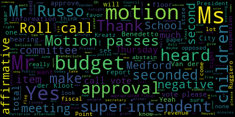
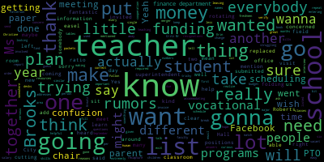

AI-generated transcript of Medford School Committee meeting June 18, 2018
English | español | português | 中国人 | kreyol ayisyen | tiếng việt | ខ្មែរ | русский | عربي | 한국인
Back to all transcripts
[Burke]: Meeting of the Medford School Committee will now come to order. The secretary will call the roll. Present, seven present, none absent. All please rise and salute our flag. I pledge allegiance to the flag of the United States of America, and to the republic for which it stands, one nation, under God, indivisible, with liberty and justice for all. First item, approval of the minutes of May 21st, 2018. There's a motion on the floor for approval by Ms. Van der Kloot, seconded by Mr. Rousseau. All those in favor? All those opposed? Motion passes. Approval of minutes of special meeting of June 4, 2018. Motion for approval by the underclude. Is there a second? Seconded by Ms. Kreatz. All those in favor? All those opposed? Motion passes. Approval of bills, transfer of funds. Ms. DiBenedetto.
[DiBenedetto]: I just had a couple questions. Okay. On page 5 of 18, A little bit more than halfway down, it says, lost books, iPads, and deductibles in the amount of $464.71. I don't know if you know what that was for. Page 5 of 18. A little bit, teeny bit more than halfway down. Anthony Penta. So that would be, if you found the page, why is it still on? Yeah. I didn't ask about that.
[SPEAKER_09]: It was asked to be thrown away. They take all the kids' phones in elementary school, and they have a system where they take them out, and they check them off, and check them in, and one inadvertently got thrown in the trash, and the parents had all the proof, and the staff of the Roberts agreed with what had happened.
[Mustone]: So the parents were reimbursed for the lost iPhone.
[DiBenedetto]: Thank you, Ms. Mastone. Thank you. And my second question is on page 7 of 18. It just says, Timothy, Bonner tuition and usually it describes what type of tuition. I don't know if that it's in the amount of looks like it says 53,000 Sorry Okay, usually it says that Special education next to it, so I was just confirming that those are my only questions a motion to approve I just want to ask you a couple of quick questions to you
[Ruggiero]: On page seven as well, so the Roberts miscellaneous charges, is there a particular set of charges that fall under this or?
[Burke]: Again, this is 890, that's your student activity account.
[Ruggiero]: That's student activity, yes, thank you.
[Burke]: It's just reimbursing it.
[Ruggiero]: Yeah, I just wanted to make sure, thank you. That's all I have.
[Burke]: Motion for approval by Ms. DiVenedetta, was there a second by Ms. Leanderclude? Roll call vote, please.
[SPEAKER_04]: Ms. DiVenedetta. Yes.
[Burke]: Yes. 7 in the affirmative. None in the negative. Motion passes. Approval of payrolls. Motion to approve by Mr. Benedetto, seconded by Ms. Vanden Heuvel. Roll call vote, please.
[SPEAKER_04]: Yes.
[Burke]: Yes. 7 in the affirmative. 0 in the negative. Motion passes. Is there a report of the secretary?
[Kreatz]: I just have a report. I want to thank the finance department, and I want to thank Christine Patterson, and I also want to thank City Hall, the finance department, for, you know, all their cooperation all year. What they do is they put together the packets and they, you know, they actually put them together and they have every single invoice in the correct order. And so it makes it really easy for me to go through and verify those numbers and the addresses and the names all match up. And they've just been extremely helpful. And I actually go into the City Hall office, the finance department, and I sit in one of the vacant desks or in another office with somebody at one of the tables. And they've just been so accommodating with my schedule. And everybody's just been fantastic. If I have questions, I send an email. I get answers right away. Everybody involved has been fantastic. So I just wanted to say thank you for a great first year doing the bills. Thank you, Ms. Kreatz.
[Burke]: We see you walk in. Yes. Wednesday or Thursday afternoon. Yeah, Tuesday or Thursday afternoon. So thank you. report of committees a little later on. You'll be hearing on the budget committee report. And now, Ms. Vanden Heuvel, if you would like to make a motion.
[Van der Kloot]: Yes, I'd like to suspend the rules, order of business, so that we can take up the new business, the CASA.
[Burke]: There's a motion on the floor for suspension of the rules. All those in favor? Aye. All those opposed? Motion is granted. I'm looking for the paper. Sorry. I don't have the paper either. I think there was one on our list. Thank you. There's a motion for suspension to take a paper in the hands of the, I was going to say the president, the mayor. Presentation of $50,000 grant by Giancarlo Mata, President Amaretis, and President Cassett.
[BrSC8V8no0E_SPEAKER_11]: Good evening, everyone. Good evening. Name and address, please. Anne-Marie Cugno, 871 Felsway, Medford, Mass. It is my pleasure again to, hello, everyone. and Madam Chair, and to Mr. Superintendent, that I present Jagan Lamanta, who is the president of, well, she was the founder of CASET, and they have been very generous over the years to give us the money that have allowed our students to learn the language, the Italian language, over the years, and it really, networked with our high school students, especially, and done a lot with our students over the years. So I just want to pass it over to Dr. Mata.
[SPEAKER_00]: Thank you, Ana Maria. Mayor, Superintendent, members of the school community, I'm here for two reasons. To present to Dr. Belson and the Mayor a check for $50,000. but also to bring regards from the Consul General, from the Italian government to the superintendent. We have enjoyed many years of a strict collaboration, professionalism, and we were very lucky. We hope to continue in the next years with this collaboration, which will bring us forward to the development of your world language department, with emphasis to the Italian department, for its culture and its language. Therefore, thank you. Farewell, Dr. Belson. And we hope to be able to check upon you once in a while for your consultations with KASIT. We need you. Mayor Burke, thank you. Members of the school committee, thank you. Community, thank you.
[Belson]: language instruction of the elementary grades. It's a tremendous program, and they've involved the Italian Consulate, and as you know, there's been many more activities besides just the language instruction that they brought. The only thing I'm disappointed in tonight, Chikandra, is the fact that I thought you were gonna give me a Ferrari tonight. I thought that was part of the deal. But, having not received that, it's okay. Sorry, but you know they did bring...
[Burke]: But they did. We have the actual check. You notice how quickly I get dismissed around here.
[Belson]: So now watch what happens with this one. Christine, come on up and get it before I spend it.
[Unidentified]: Come on up, let's get a photo.
[Burke]: Really? Maybe you'll get the test right. Oh, I think they're coming up. We'll all come up here, it's easier. Come on, Aaron. She does it a lot. Yeah, she makes sure it develops.
[Unidentified]: Can you see Aaron yet?
[SPEAKER_04]: One, two, three. Chow. I would have said wine. Spaghetti.
[Unidentified]: One, two, three.
[SPEAKER_04]: Spaghetti.
[Unidentified]: Thank you very, very much.
[Burke]: We're very proud.
[SPEAKER_09]: Have you heard of some of the children?
[Burke]: Have you heard of some of the children? Have you heard of some of the children? Have you heard of some of the children? Have you heard of some of the children? Have you heard of some of the children? Have you heard of some of the children? Have you heard of some of the children? Have you heard of some of the children? Have you heard of some of the children? Have you heard of some of the children?
[Unidentified]: Have you heard of some of the children?
[Belson]: Have you heard of some of the children? Have you heard of some of the children? Have you heard of some of the children? Have you heard of some of the children? Have you heard of some of the children? Have you heard of some of the children?
[Unidentified]: Nice, thanks.
[Burke]: On the motion that a letter of thanks be sent to Cassett and... Mr. Benedetto.
[DiBenedetto]: A letter of thank you to Cassett and to the embassy, all involved. It's a great program for our children. A lot of people donate generous things. come year after year. Thank you very much.
[Burke]: While we're into suspension, we had a posted budget hearing meeting that was continuing on to tonight. It was posted last, actually early last week. It was Medford Public Schools, Medford School Committee, Public Hearing, Fiscal Year 19 Budget. It was Monday, June 18th, 2018 at 7 PM, Medford City Hall, Council Chambers 85, George B. Hassett Drive, Medford Mass. And then there's a note to us. And as everyone realizes, Thursday evening, we had a budget hearing that started, I believe, at 5.30 and went till maybe 6.30, till 11.30. And we went through the budget book and had many presenters and people answer questions. And there were some items that were asked to be reviewed. And we do have a sheet of proposed changes. Mr. Superintendent, do you want me to read them, or do you want to?
[Belson]: Let me go over them real quick.
[Burke]: Mr. Superintendent.
[Belson]: Thank you, Mayor and members of the committee. Pursuant to our budget hearings that we had last Thursday, we reviewed some of the items that you brought up and tried to make some adjustments based on available funding that occurred during the few days that came after that meeting, and also based on what we perceived to be errors in the budget, at least in the first cut. So in front of you, you have a budget document follow-up. I'm just going to go through it for a minute. Two resignations from the vocational school, faculty yielded $17,116 in savings. One was in the auto shop and the other was part of the engineering program. Salaries would allow some gapping between what they would have made if they had stayed and what we will replace them at. So that gives us back $17,000. There was a few resignations from the special ed faculty, and that will yield another $3,339. And these total areas, the two of them, give us $20,455 in available funding to be reapplied. So one area that you actually voted the other evening was the banned travel account. Is that applause or is that just a... The band travel account got $3,000 that you actually voted. Now, just so we understand, we have not changed the lines in your budget because until we make all the agreements tonight, we're not going to change things internally because once we change one page, we have to change five or six pages at least, minimum, because they all play off each other. So, we're putting $3,000 into the band account. The elementary textbook account is going to be increased by $1,500 per school for a total of $6,000. Now, we put it in textbooks. It can be used for educational materials. It can be used for supplies. Whatever the principal feels is important, but that gives them a little bit more back based on some of the discussion that was had the other evening. The crew athletic program is expanding rapidly. We've had several meetings outside of that. The mayor has hosted several meetings, and there's several things going on. They have two seasons. In order to supply the coaches, we are $8,400 short, so we added that to the athletic budget. So we would cover that situation going forward this year. And then there were two corrections to the principalships of the Andrews and the McGlynn Elementary that needed to be brought up to date. They were using older numbers. That required $1,463 to go to the Andrews and $1,692 to the McGlynn Elementary Principalship. So the total additions of recaptured funds evens out at $20,455. The above adjustments and corrections will be made tonight if they're approved by the school committee. And as we progress toward the school budget, the end of the school budget. There will be multiple changes based on personnel matters and non-salary costs. So there will be people that come and go, just like there are all year. And we will bring you up to date periodically in order to free up some funds, either to fill an account that might need a boost because of cost, or maybe to add something back that we couldn't add back in the first cut. So as I said, we're not changing budget lines because it would affect too many page changes. We'll make the line adjustments once all decisions are made regarding the budget and provide copies to the school committee. Additionally, the second page of what you've been handed has a report on union settlements. And as I reported the other evening, the only union settlement at this point in time is a union settlement with the administrators. We're going to recommend later on this evening to look at the unit building principles and other units are still being negotiated. We have some discussion tonight about the teacher's contract and we're meeting with the teachers tomorrow as well as the paraprofessionals. So we'll give you information in that executive session as part of negotiations. In addition, today we met extensively with Safe Havens, That's the group that is doing the comprehensive study of our security procedures. We went over a number of things with them. Another visit will be coming back. They've already had two visits now. And when that is ready, we will come back with them with some recommendations regarding security. In the interim, we have kept the security line in the budget. But that doesn't mean that that will be the way we expend it. It will be tied to the recommendations of Safe Havens and the wishes of the committee. So let's see what that report tells us. There are a number of things we talked about today that are non-cost items that we think could be very helpful. There's some repositioning things that could also be helpful, no-cost items. And there are some things that are low-cost items that they think would be very helpful. Let's let that report come out. In the interim, we have the line item in place. We're not going to spend against it until that report comes out, but we'll prepare ourselves to go in several directions and provide information to the committee so that we're ready to move once we see that report and once we reach some agreement. So that is that piece there. Again, one other item that came up the other evening that I think deserves some sort of mention tonight, and that's the Buildings and Grounds budget. We believe that the projects that will be most consistent with what the community is asking for and what we've seen must come from capital funding. What we have taken from that budget will not meet those needs. What we have taken from that budget reflects our savings in telephone, reflects our savings in various forms of energy, reflects our savings in other areas, in cleaning, that we believe we can absorb at this point in time. And that allows the city to consider our capital requests, which I've given you some suggestions, but certainly others may be in order. And as a committee and the mayor, you can sit and decide what you think is most appropriate as opposed to anything that I might think is appropriate. And certainly Dr. Marice Edouard-Vincent will weigh in as well. I should tell you this evening that she would be here except the fact that her son Elijah had his wisdom teeth pulled and she's home giving him some comfort. But I spoke to her and I've gone over the materials and I know that she's in support of what I'm giving him. So I feel comfortable with that. But that's what we've done so far since Thursday evening. And I would hope that the committee would support the budget as we've presented it. A lot of work has been done. Staff has worked very hard to make things fit. Budgets have contingencies in them, as we've talked about the other day. You never know when something new is going to pop up, and you never know when we're going to save something. But that's the process of managing a budget. And that's what we do every year.
[DiBenedetto]: Thank you, Mr. Superintendent. Mr. Benedetto. Thank you. I'd first like to start off talking about the security in our schools. I received a text today from a new parent who works throughout the Commonwealth in and out of schools all the time, and this is the text that I received. I'm really impressed by the security measures at Medford schools. I've been to four schools and each one has been excellent, much better than other districts I've visited. I'm really critical about security and you are doing very well. So I thought I'd start off on a positive note and just tell you that the changes that we're making, parents are seeing them and they appreciate it. Because they need to know that their child are entering a building in a safe environment and Having those monitors at the doors, really, this new parent, she's been to the high school for the Parent Information Center, to the Columbus School, to many, many schools already. And she has nothing but good things to say about the Method Public Schools so far in her experiences. So I just thought I'd share that and say, you know, with everything going on, there are a lot of positive things happening. So that's the positive. First of all, thank you for financing the band travel, because if we're financing all the travel for the athletics, we should be financing all the travel for our music students as well. So that's greatly appreciated. Thank you for taking care of that line item. And I'm sure as more people retire and people are replaced, more finances will be found to add different things in. throughout up until September. I know you usually say that to us, Mr. Belson. I'm very happy to see additional textbooks added back to the elementary schools of $1,500. They were cut $2,500. It's a good step. I really want to watch closely and make sure that the students and the books are in good shape for children to take home. And hopefully that $1,000 cut Her elementary school won't affect them too drastically. The crew program, I can't complain there. My son was one of the first members to row for Method Crew, and he won the first medal for Method Crew. And I think at some point, he'd like to donate it to the case up at the high school. So we did find that recently, and we saved it. So I'll give that to you, Mayberg. Maybe you can help me with making that happen. When we saw the amount of money spent on our athletics, some sports cost more than others, and maybe that's something down the road we'll look at. But I'm really grateful that we have over 600 children involved. And a lot of those children also are involved in band and orchestra, and they do everything. So it affects a lot of children throughout the district. Fourth grade on, they get to play musical instruments, even recorders before that. But we have great programming both in the athletics and the arts. I'm glad to see you adjusted the principal salaries so that they seem fair and equitable. So everybody's on the same line item because we made great measures years ago to make sure that stayed that way. And then I really, my problem with the budget is a few things. The first is the lack of kindergarten aids, especially as a committee. We have for years voiced our concern, and I don't feel like it's been heard or listened to. Or maybe it was heard and just not the same priority as the administration. I can respect disagreeing on certain things, but Consistently, this committee has voiced concerns of that issue. I would have liked to have seen that fixed in this budget. The maintenance and repairs decrease of 6% seems really crazy to me when I see needs in our buildings. And I talked about it at our committee of the whole meeting, just shades alone. You could do a little bit every year with that. And they're necessary not only to stop the glare so teachers can teach and people can see the boards, it's also for security reasons when you're in lockdown and shutdown. That's a major issue too, because if you can't pull the outside shade and you're in the first floor, someone on the outside of the building can see into the room. So I do have concerns with cutting maintenance and repairs at all. If anything, I would like to see more maintenance and more repairs as our buildings age. And those are my biggest issues, and I'm going to yield to other members. I don't want to go on and on for a long time. I do think that there was an error this year in the transfer of funds from the budget book. I think that somehow, at the beginning of last year, The line item was $10,000 difference for the vocational school in one area and $5,000 in a different area. And I noticed it at our budget meeting because I had both the previous years and this year's book open. So it might have been lost through the 17-18 school year and then not carried over. But it was in the 17-18 book that they should have carried over $70,000 and $60,000 was carried over. I spoke with the superintendent and he said it was never allocated to them for 17-18. So that's why it said 60 this year. I think it was a loss of them. 17-18 and another loss this year because not only did they go from the 70 to the 60, they're going down again from the 60. And I just want to pull up the page so I make sure I get the correct information. They were cut from 60 to 55. So in the last, they're losing 15,000 in that line item, and the same thing happened with their textbooks. It was supposed to be 15,000 carried over. So I just feel like we need to look at that, and if adjustments need to be made throughout the school year, that they don't have enough money for their instructional supplies, especially out of vocation, because you need lab supplies for biotech. You need shop supplies. You need iron for the tin lockers. You need carpentry supplies and some of the equipment as well. There's a big cut in vocational budget. My husband's a union carpenter, and he's been up at the vocational school, and he sees that a lot of the shops are still using old machinery and need to be upgraded to see cuts in these areas. is really very difficult for, it's not in the best interest of the education of our students. So those are my main issues with this budget and it's very concerning. So based on some of the things I see, I don't see me voting for this budget in the way that it's presented.
[Kreatz]: Ms. Critz. Yes, I was gonna mention kind of similar things that Erin mentioned, so I'm not gonna repeat that. So I think, I just wanna make sure, I realize that we're gonna recapture some money due to some resignations at the vocational faculty. I really wanna make sure that I know that we're gonna be looking for new teachers, so we need to keep, I just wanna make sure that the money that is put on the budget book, it might change because the person will be entering the salary would be a little bit different, but I don't want the money that's here listed for these teachers given to another area because the teachers are required to have so many students per ratio, teacher to student ratio, and then with the new freshmen coming in, they're gonna be rotating through the classes, so it's important that we're not gonna cut a teacher because each of the programs here need two teachers in each of those programs. I know we're struggling. And I know Mr. Fallon is trying to find people to fill these positions, but I don't want that money to be used somewhere else. I guess that's what I'm trying to say, because we need that money there, so when we get those teachers, they're gonna be there. And while they're not there, we need somebody in there teaching with the students, because that is a major concern, because that's gonna be, I mean, it could be up to 40 children in one classroom, rotating through. It's making me a little nervous with that many teachers gone. And I also wanted to know if there's like an exit interview just to ask these teachers maybe, you know, why they left. You know, with the human resources, you don't have to tell us, but I'm just curious. That's a lot of teachers in less than six months and, you know, I'm just concerned. Is it something that's going on with the scheduling and, you know, because I've heard rumors that, you know, We need to have a meeting and sit down and talk about the scheduling. I'm not trying to break up the merger. I'm not trying to do that, but I think that the scheduling is getting a little tricky with the vocational programs and what they have to take to learn their skills. And I hope it's not some of the reasons why some of these teachers are leaving, or I don't know. I mean, I really don't know. I've heard a lot of rumors. I want to have a meeting. You might be able to. I think the superintendent wants to.
[Belson]: Let me try and answer some of these things. First of all, there's only one reduction in the vocational faculty, and that's for a program that only had one student in it. I mean, you can't sustain a program with one student, and the demand statewide has gone down. We just have to be realistic when a program is not going to attract students. We can't fund it just simply because we've always had it or had it for a number of years. Programs will come and go a little bit. New programs will emerge. And there may be that coming forward a year from now, there might be a plumbing program. There might be some other program that is more likely to attract students. You talked about landscaping the other night. It might be something that's more attractive than the program that has one student in it. So the only reduction is the one teacher from the program that had one student in it. As far as the dollars and cents go, I don't want to get into individuals right now, but I know that some of them moved closer to home and also got more money. You know what I mean? And that's usually an attraction for people in the trades when they can do that. We just simply need to pay attention to that. The money we have, we're not moving any money away from it. We're just simply saying that at this point in time, in order to cover the variances or the different adjustments that you want, this is a good way to go. But if a person costs more money, we'd go to undistributed to take that money from that account. You know what I mean? So there's ways to make that up, but we have to begin someplace. You take it where it exists initially, and then you move to cover it.
[Kreatz]: Do you know what the plan is for September if we don't have these teacher positions filled? Because we have a teacher missing in cosmetology, construction, there's a CCL teacher, well he's there, I'm sorry, he's there, I'm sorry, HVAC, there's a teacher, they're down, and then I know robotics and engineering will be down one teacher. And I know just from experience with my son in that classroom, it's very busy and I know the teacher that left was the teacher who did most of the machinery and CNC and like that is in a different room. So it's very dangerous. Like you can't have kids in that room operating on their own. Um, and then they're not going to learn the trade.
[Belson]: Um, so, so recruitment is underway. I mean, we're certainly going to recruit people. We're going to make every effort to bring people in. Can I absolutely give you a, you know, a guarantee that we'll have the person we want by September? No. But it's highly likely we'll be aggressive out there to get people. And there are people out there who want to. And if a person has got good skills and ability, it may require getting a waiver from the Department of Elementary and Secondary Education in order to help them bridge the gap between their trade and also their teaching. But we certainly have no intention of diminishing the faculty. These things happen. English teachers go. Social studies teachers go. People come and go. So we'll be at it. We'll be on it.
[Kreatz]: So that was for the vocational, and so I wanted to bring up, there's been a lot of confusion, and I've been getting tagged on Facebook because I went out to the Brooks School, and when I went out to the Brooks School, I was invited, or we all were invited by the Brooks BTO, so I happened to have that day off, so I went to the Brooks School to just walk around, and we kind of put a list together and I just wrote it up on paper. It was just a to-do list, a wish list, almost like what the teachers submitted, the principals submitted for their school improvement plan. It is a wish list. Some of the items on the list can be done, things like cutting the bushes, cleaning up the trash, cutting the grass. Those things can be done, and John McLaughlin has confirmed that things like that can be done. So the rumors on Facebook are that I've promised that the dirt field is going to be replaced with a turf field. And I never made that promise to anybody. So there's some confusion and there's some rumors flying around out there. people are upset with me and they're calling me and emailing me and I don't know what, I really honestly was just going out to put the to-do list together and we as a committee haven't approved anything. It was we can all go out and meet with the PTOs and that is one of my plans to do, but I just did that last week and then a lot of things have developed since then, so my plan is over the summer and a couple of us maybe can go out and make a to-do list at each school and meet with the PTOs. I still want to do that, but the timing of my visit to the Brooks and today's meeting, there hasn't been a lot of days in between that it gave me time to go out to the other schools. And that's a lot of schools to go out and visit and do a to-do list. But I'm definitely going to go out to all of the schools. And I just want to clear up that confusion. And I'm not going to go back and forth with people on Facebook, so I'm just addressing it right now. And as I think the Mayor said, and Superintendent Baleson said, is that most of this is going to be coming from the capital funding. So it's a good idea that we put a list together, so we know, okay, so we have this big list, and it's broken down by different schools. And then we have to look at it and say, well, who's going to get funding and what and where? But everybody will get funding, I'm sure. And I wasn't picking one school and only going to help that school. I'm going to help all schools. I just want to make that clear, because I've really been getting a lot of messages and just not so nice. So I just want to please, that was a misunderstanding. I don't know where some of that information came from. Yeah.
[Burke]: Mm-hmm, yeah. Point of information, Ms. Vanderbilt? Point of information.
[Van der Kloot]: Point of information, that no good deed goes unpunished.
[Kreatz]: Don't take it. Yeah, so I know, and I plan to go out to the others. You know, it takes time. Yes. Yeah, it takes time. Thank you, Ms. Krutz. Yep, and I just had one more, and I just have an update for another parent that was concerned about some folding chairs at the Roberts, and I will get in touch with that parent, but they do have chairs for all the students, and there's only like one student that requires a folding chair. So everybody is all set and all the rugs have been replaced. So I think that some of the information might just be a little outdated with some of the supplies that are at the school. One thing that she did want me to mention is that the Roberts is actually short and they haven't been able to get money for easel paper over the past two years, and the PTO has been buying the easel paper. So if there's any extra funding, you know, just a wish list, I wanted to just add that special note for them on behalf of the parent. So I just wanted to add that, and that's it for me.
[Burke]: Mr. Ruggiero.
[Ruggiero]: Thank you, Mayor Burke. Superintendent Nelson, do you have a sense of what the size of the capital budget request would be just ballpark figure?
[Belson]: I think, you know, the mayor has got many projects in front of her, you know, and I'll let her answer it. But I mean, obviously the schools were important, and I think she recognizes that has been generous over a period of time as as a predecessor has been. And I just think we need to put a list together and see where we can go. But I think we, you know, need to give ourselves a multi year plan. You can't promise everybody everything all at once. But if people see progress, I think they'll be encouraged. And I think we can work from there.
[Ruggiero]: Would the mayor be able to speak to the size of the capital budget?
[Burke]: Can you just give me a rough ballpark estimate? As I mentioned the other night, once we have free cash certified, then we'll be able to look at it deeper. But until we have that number, we can't really look.
[Ruggiero]: After the last budget meeting, I was deeply disturbed. Not by so much the presentation of the budget or anything that was contained in, but a fact I learned that I wasn't aware of. And this would be the pupil transportation of homeless students and the amount of money that's spent to this program. Obviously, I have no troubles helping students that are homeless, making sure that they're a part of our community. But when we spend so much on these students, that money could be better used to house them. The fact that we're spending over $13,000 a year to move a child here from Medford to whatever community they come from where their parents might be living in a shelter is insane. It is the exact kind of bureaucratic insanity which prompted me to run for elected office. So that said, I would like to ask my colleagues that we refer this issue to City Solicitor Mark Brumley. Now, I understand that the state is supposed to reimburse us for this money, and they haven't. But we have a platform to advocate for these children, and by pressing this case as hard as possible, with either our own attorney, Howard Greenspan, or City Solicitor Mark Rumley. I think would shed light on this problem. Like I said, it's absolutely absurd that we spend this money to truck a child back and forth, rather than helping them house, helping them find housing. And I seriously would like to make a motion that we refer this issue to City Solicitor Mark Rumley.
[Belson]: I'm just going to suggest to you, you might be more productive to refer it to the legislature.
[Ruggiero]: Well, we've been doing that.
[Belson]: Because it's clearly not a legal issue. It's clearly a way that the legislature funds these things statewide. And there are reasons why they place people in different homes. Sometimes there may be housing available in some communities, sometimes not in others. But maybe there could be an option that the legislature could put together. But I don't think that the solicitor can tell you that the legislature must do that. I think the solicitor can tell you that, you know, the possibility exists if they choose to do that.
[Ruggiero]: It's my understanding that the Supreme Court ruled that they have to reimburse us for this money. Is that correct or incorrect?
[Belson]: They technically are, but it's always subject to appropriation. The famous last words of subject to appropriation, which means if they don't appropriate the money, they don't have to reimburse us.
[Ruggiero]: Well, I think that we need to pursue this issue beyond simply just putting pressure on legislators. I really do.
[Burke]: Make it in the form of a motion. I'm sure someone will second it. And we can send it to Solicitor Romney, Howard Greenspan, and also to our Attorney General. All right.
[Ruggiero]: So the resolution I'd like to put forward.
[Burke]: I think Mr. Russo, point of information on this? Mr. Russo.
[Ruseau]: the Mass Association of School Committee, the Poverty Summit that I attended, every single community is up in arms in this. So I mean, we're certainly not special in that regard. In fact, we probably have a lower number than a lot of communities. But as I believe somebody else, maybe it was you who pointed out, the Supreme Court's already been cleared. No one funded mandates. The Supreme Court doesn't have an army. So they can say that, and the legislature can just ignore the Supreme Court, and that's what they're doing. And the judge isn't going to pass this up to the Supreme Court. It's something that's already decided.
[Ruggiero]: Well, they can put a ruling for... There is a ruling from the Supreme Court.
[Burke]: Can I leave that to the lawyers to decide if there's a way to proceed?
[Ruggiero]: Yeah, I would like to make a formal motion to have City Solicitor Mark Rumley and Howard Greenspan look at this issue. to advise us how we should move forward. My frustration is not in helping homeless children. That absolutely needs to be done. My frustration is wasting money that could be better used housing these children. And I find it deeply frustrating.
[DiBenedetto]: Point of information, Mr. Benedetto? Thank you. A little bit of history. I'm the homeless coordinator for another district. So this issue I brought up over the last few years And when I was running for state representative, this was an issue that I was going to work on at the House of Representatives. When I didn't get elected, I sat down with Christine Barber, who is our state representative, and she brought the issue before the House. And it was unanimously approved for a commission to study this issue. And that was approved maybe close to three years ago now. So I've been recently talking to Pat Jalen and Christine Barber. Actually, Christine texted me yesterday to discuss this commission. And I also spoke with someone who has the ear of the governor and asked him to bring the commission forward instead of appointing it, and how I really want a seat on that commission. And my goal and my dedication to this is to sit on that commission and make changes not only in homeless transportation, but to have a directory of homeless families so that homeless children are placed closer to the communities that they lived in. So yes, we talked about this a little bit at our last meeting, and I talked about my colleagues working with me on this issue. really believe that that commission is our next step. I'm totally for your motion to try things that way as well. And I want to know who's making the money. I want to follow the money and see who's getting rich. Because we pay, I'm not sure how much Medford pays, but. $260 a day. I like to break it down a day per child to drive them to and from a shelter. Sometimes less if there's two kids in a car or a family of children, then it could be like 160 per child per day. With that amount of money, you could rent them an apartment, buy their clothes and their food, and really take care of them in a lot of different ways. But that's not legislated yet. And the only way we're going to change this is through legislation and through active participation. And I really believe that that's the method that I choose to work in. But I'll support you in your motion to move forward in this way as well.
[Burke]: On the motion as seconded by Mr. Russo, roll call vote, please. Mrs. DeBette. Yes. Mrs. Ratchett. Yes. Mr. Hughes.
[SPEAKER_04]: Yes. Mr. O'Toole. Yes. Mr. Russo. Yes. Mrs. Vandeclute.
[Burke]: Yes. Ms. Vandeclute. Yes. 7 in the affirmative, 0 in the negative, motion passes. On the budget, Ms. Vandeclute.
[Van der Kloot]: First, I think that it's great that Erin, you've done the work on the homeless issue. And Michael, you're interested. It's certainly one that the MASC, Massachusetts Associated School Committees, has been interested. Unfunded mandates altogether has been a constant theme of their trying to, of advocacy. And it's very, very frustrating that the number of unfunded mandates that school systems have to deal with. On the budget overall, I think it's a, I was very pleased to see that the bottom line had risen and that we were able to accommodate so many things that we did want to put forth. I think that, Mayor, we're putting a great deal of trust in you because the other night you did, in response to one of my questions, mention that once you understand the level of free cash the city has, that we would be looking at a capital budget, which is just so essential now. We've actually been putting it off a little bit. When we came in, I think maybe two and a half years ago, we actually have done, we have the list of things that needs to be done, although they need to be updated. But some of those very same things, for example, playgrounds and whatever, they're on the list. And there's much smaller items and much bigger items. I think that is the one place in the budget which is just a little tough because, for instance, when I see The $100,000 in telephone savings, that would have been nice to be able to keep in the budget, but I have to be realistic about the demands of money on the city. And so I'm putting my trust in you, Mayor Burke, to make sure that we are going to move forward on a capital budget. I think that there's, we always have to understand, I said several times last week, that we are essentially in the bottom line, approving the bottom line of the budget. That's what we do. And that there always has to be understood that there will be some changes and some flexibility. So when we talk about areas that are of concern, that we might be seeing changes, hopefully, in the ways that the committee would like to direct over the next couple of weeks and months. So I'd like to put a motion forward to approve the budget. Yes. To approve the budget. Because my daughter is employed in the vocational program, I'd like to sever the vocational salary budget for $2,416,682 and vote on that separately. And then put forward a, so with someone else could put forward that motion to approve that piece of it. And then I would put forward a motion to approve the rest of the budget, 58,608,631, which will give us a grand total of 66,629,011. Is there a motion on the floor for approval of the vocational salary budget for fiscal 19 of $2,416,682? Yes. It's a motion by Ms. Kreatz.
[Burke]: Is there a second? I'm Mr. Russo. Roll call vote, please, Ms. Kreatz. Just the vocational salary. Ms.
[SPEAKER_09]: Van Kloot needs to abstain due to a family member being employed there.
[Van der Kloot]: Abstain.
[Burke]: Yes, six in the affirmative, zero in the negative, one abstain, motion passes on that. On the total appropriated fiscal 19, Mr. Russo.
[Ruseau]: Oh my gosh, sorry, I just had to switch my thought. Again, yes. Sorry, give me a moment. Would anybody else please?
[Burke]: Ms. Van der Kloot, did you? make a motion for approval of the total appropriated fiscal 19 you did make that yes I know mr. zero I just wanted there are a couple of issues that I found
[Ruggiero]: beyond the other points, the kindergarten aides and the capital budget. I am going to end up abstaining on this budget. I have difficulty.
[Burke]: You cannot abstain. You can vote no. It's a yes or no. You need a conflict of interest reason to abstain. I see.
[Ruggiero]: Well, I- And this is not a capital budget.
[Burke]: Just keep that in mind. I can't. This is the operating budget. Just for information.
[Ruggiero]: I understand it's not the capital budget, ma'am, but could you please I'm asking just for a rough estimate.
[Burke]: I can't give that to you tonight. On the capital budget?
[Ruggiero]: On the capital, so you have no idea.
[Burke]: No, we haven't closed our books yet. Mr. Superintendent, would you?
[Belson]: I've been around a long time, as most of you know. And some people think too long. But nevertheless, I've seen a lot of budgets. If you get hung up on any one item, You're not helping because the budget is much bigger. We've got to be able to look at the budget in its totality. You can express your displeasure or your concern about an item or a particular thing, but you don't want to not vote for the things that you do care about, supplies for the kids, teachers, materials, all the kinds of things, services that kids need. I think, you know, if you have an objection to a particular item, express it. But don't not vote for the whole budget, because the budget probably has many things in it that you do want to support. And I think that's really something to say. You can come out and say what you don't like, but you certainly want to support all the resources, $60 million worth of resources going to young people and families in this community. That's the way you've got to look at it. I mean, that's the way I have to look at it every year, because there are many things that I would like to put in the budget that I can't. I mean, if I had, you know, an unlimited checkbook, you'd be a lot more things in this budget. But no one ever does. In fact, today, you should know that the Supreme Judicial Court of the Commonwealth of Massachusetts ruled against the Fair Share Amendment. That's the million dollars tax. That's 1.9 to 2 billion dollars worth of lost revenue that the Commonwealth will not... And the legislature is going to have to struggle, and the governor is going to have to struggle with how they are going to fund things. The discussion of the foundation budget is rife. Some of the offsets are rife, circuit breaker. We've talked about these things. Where are the resources going to come from? So no one, whether it's the state level or our level, gets to fund everything they believe should be in a budget. So I would just suggest that if there's a particular item that you feel needs more attention going forward, you express it. But don't withhold your support for a whole budget, because you're basically saying the other things aren't worth it. Of course they're worth it. A lot of things are worth it.
[Burke]: Mr. Ruggiero.
[Ruggiero]: I mean, with all due respect to the superintendent, whose opinion I do value, my frustration is parents are very concerned and very frustrated about the state of some of our grounds. And I mean, so I guess it boils down to a question of trust. And I'm ultimately out. I'll give you the benefit of the doubt, Mayor Burke. I mean, I think that's the best move forward. I've mentioned all my reservations to you. I appreciate some of the items that were brought up. I still can't understand why we can't hire a couple more part-time kindergarten aides. I don't understand the logic of that, but.
[Burke]: And the other night, we did ask that they look very closely, the new superintendent over the summer, and Ms. Patterson.
[Ruggiero]: Right, and, you know.
[Burke]: If they need to free up, that's the priority.
[Ruggiero]: This is my first year serving. I've noticed other members have maybe more frustrations than I, but I'll cut you some slack, I guess.
[Van der Kloot]: So I just want to mention that after our budget meeting on Thursday, by chance I found myself walking out to our cars with the new superintendent-elect, and she and I had a very interesting discussion about the kindergarten aides and what her what she would like to see for kindergarten age, what she would want expectations. She obviously would very much like to see support in kindergartens, but she also had some very clear ideas which were, I don't think it's for me to share, but I can guarantee you from that discussion that I've had with her, I don't think that this is just something that's going to go by the wayside. I do think we want her to be able to weigh in. I think we've talked about that there is some levels of flexibility in the budget that we need to hear the report from the security company to determine which way we're going forth. And so without, I mean, again, it's a little, I don't want to speak for her, but yet I do want to share with my colleagues that I had a most interesting conversation about that. And I feel comfortable from that, that she has a direction.
[Burke]: Thank you. Mr. Russo.
[Ruseau]: Yes. Thank you for saying the words capital budget. So For the capital budget, unlike this budget, or maybe like this budget, will we develop a budget for the capital budget, or will you in your office?
[Burke]: No, we would prioritize.
[Ruseau]: So you give us a number. We decide how it's spent, not here's the list of the things that we're going to do. OK. I just want to be clear on that. And then one other issue.
[Burke]: And then the city council has to approve it.
[Ruseau]: Yeah.
[Burke]: Yes.
[Ruseau]: All right. I don't want to spend all night rehashing the issue of the security spending and the budget, which I probably spent too much time on Thursday on. But I do want to be crystal clear that the report from Safe Havens will not decide what we do. We will decide what we do. Sort of, kind of. the statements around that report sort of were a little vague, and that we will not, the school system will hire zero new security personnel prior to the school committee deciding based on that report that we want to hire security personnel. Is that correct?
[Burke]: We'll have to have a meeting over the summer once we get the reporting.
[Ruseau]: I'm just trying to decide like, Well, I thought we actually decided that on Thursday, that there'd be no hiring of security personnel prior to us deciding. I mean, the report coming in to the superintendent's office and the mayor's office isn't the same as us getting together, having read the report, and deciding what action to take. So when I approve, you know, vote for the budget, I mean, there's five security personnel in there. And Dr. Edouard-Vincent, you know, she is legally free to go off and hire those people on July 1. And I just want to be crystal clear, that won't happen.
[Burke]: I guarantee you that will not happen.
[Ruseau]: Thank you. Sorry.
[DiBenedetto]: Mr. Benedetto. So the superintendent's idea that we do vote for the bottom line of the budget, yes, we vote for the bottom line of the budget. But we also have been asking and giving our priorities over the years. And I don't think that this budget reflects the priorities. The maintenance, we walked every building a couple years ago and made a list that we still have. We've talked repeatedly about the importance of the foundation of education in kindergarten age. So the list, like the capital budget list, who's giving, is it coming to us or created by us? Because this budget came to us, it wasn't created by us. Because I feel like our priorities aren't in here. This has been drafted and given to us. And we can just verbally say, well, we wish we had this. Well, I'm voting on what I want. And I'm voting on kindergarten aides and maintenance cuts and vocational cuts. And because those priorities are my priorities and the priorities of the people I represent. And they wouldn't want me to vote on a bottom line. They wanted me to make sure that the things that are important to them are in this budget. And if they're not, they want me to vote not, not on a number. So that's how I vote. I don't interpret it the same way as the superintendent has presented it. So that, that, I just wanted to clarify that.
[Van der Kloot]: I just, you know, I guess it's a different, different way of approach because for me, I am voting for all the teachers who are in this budget. I'm voting for all the administrators who are in this budget. I'm voting for all of the supplies that are in this budget. I'm voting for all of the coaches who are in this budget. I'm voting for all of the different, every level of different things and While I certainly understand the importance of some of the smaller other issues that people are bringing up and are concerned about, and I share that concern too, there are so many things. I think a vote no for the budget says that we are not providing adequate monies to educate our children. And I believe that we are. I think that we always would like to have more. Everybody would like to have more. But this is a sound budget.
[Burke]: There's a motion on the floor by Ms. Van der Kloot for approval of the appropriated fiscal 19 budget of 58,608,631. Is there a second? Before I call the roll, sure.
[Ruggiero]: So in mid-August, you mentioned that you would roughly have a timeline. There'll be a committee of the whole meeting where we discuss the capital improvement plan. Thank you very much. I just wanted to make sure.
[Burke]: Is there a second on the floor? Seconded by Mr. Russo. Ms. Kreatz, roll call vote, please.
[SPEAKER_04]: Yes. Yes. Yes.
[Burke]: Yes. Yes. Six in the affirmative one in the negative motion passes the total appropriate fiscal 19 budget 58 6 0 8 6 3 1. Also there's a total superintendents fiscal 19 budget of 60 million 6 29 0 11 which includes revenue offsets which are grants and various other revenue sources. that of $2,020,381. Need a vote for that too? Let's have a motion for approval, Ms. Van der Kloot, on the total superintendent's budget. So moved, Mr. Russo seconded. Roll call, please, Ms. Cripps.
[SPEAKER_04]: Yes, six in the affirmative, one in the negative, motion passes.
[Burke]: Thank you very much. I know that there are lots of things that we all would love to have and see. We really have to put it all together and do what's best for the whole community and there are a lot of resources being spread across it. And we only have so much of a pie. So people have to understand that. It's not a tree that produces cash. We have a limitation on how much revenues we can take in through taxes. And unfortunately, the cherry sheets, the money we get from the state, it's pretty much been level every year while costs continue to go up. So we're absorbing all the increases, and the state's certainly not helping us with any of that. So thank you very much. Ms. Vindekloot.
[Van der Kloot]: appropriate to thank all of the people who worked on the budget, particularly our superintendent of finance, Christine Patterson, and everybody else who just helped put this together, who did number crunching, who did paper collating. It's a huge job, and we're most appreciative.
[Burke]: Thank you. Thank you, finance department, and superintendent's office, and our new superintendent for all participating. Mr. Ruggiero?
[Ruggiero]: I just also want to thank the members of the school committee. I really appreciated not only everyone's heart, but also the opportunity to explore the issues with you, because we all have disagreements. We all have programs that we really love. But it was a really wonderful experience for me, and I really appreciated working with you. So I just want to, beyond all of the work that our finance department did, and all the work our superintendent, and I'm sure all the work that Dr. Edouard-Vincent put in as well, I just wanted everyone to know, I mean, we worked very long on this. And it really means a lot to me how hard people work. So thank you.
[Burke]: Very good. The next item on the agenda, recommendation to approve the school committee meeting schedule for school year 18-19. Motion to approve by Ms. Mastone, seconded by Mr. Benedetto. Roll call on this too? Yeah? Mr. Benedetto.
[SPEAKER_04]: Yes. Oh. Mr. Stokes. Yes. Mr. Jones. Yes.
[Burke]: Yes, seven in the affirmative, none in the negative, motion passes. Item two, Mr. Russo.
[Ruseau]: Sorry, a question about procedure. So when... He's having trouble hearing. Sorry. Just a question about procedure. So for the next budget cycle, I'm just trying to figure out when the right time is to ask for some changes such as Like sports, I'd like to know the per pupil, how many pupils are participating in each sport. And that's just one of many changes to the way the budget's presented to us. So.
[Burke]: The pre-budget meetings that preceded start in February.
[Ruseau]: Okay.
[Burke]: If you want to see certain things, I would make a request to that.
[Ruggiero]: Okay. Thank you. Mayor Burke, I also have another point that's not a part of the process, but something I'd like to see in the future. A number of communities have worked with participatory budgeting. where a certain amount of money is set aside for the community to decide how it's used. I was thinking that .1% would work out to be about $60,000. I would like in the future to explore this idea. I don't know exactly when the right time is. We could put this as an agenda item so we could debate it or I'll make a motion right now to explore the idea or put it on the next time we have an agenda.
[Burke]: Generally it's on the city side, so it'd be in the municipal budget.
[Ruggiero]: No, I would like to see community budget and the school budget. So parents have a little bit more feedback. I mean, yeah, I think that would help community participation. And in addition, parents sometimes have the best ideas. I've learned a whole lot from the people that have called me.
[Burke]: So you probably want to make a motion as we get into December time frame. OK.
[Ruggiero]: I just want to get a sense of when we'll do that. I'll ask to put that on the agenda when we have the time. Thank you. Very good.
[DiBenedetto]: Item two. Mr. Benedetto. Thank you. It reminded me of a question. We spoke a little bit at our last meeting about the Roberts School ground cover for the playground, and I was just wondering if it was sent out for it.
[Burke]: That was Thursday evening. I don't believe it happened Friday morning. I don't know. Ms. Patterson, the Roberts PRFB?
[DiBenedetto]: I think they said this morning.
[Burke]: It was what they said Thursday night. You knew the answer to that.
[DiBenedetto]: No, no, no, no, no.
[Burke]: They sent it today.
[DiBenedetto]: Oh, okay, you wouldn't know.
[Burke]: City Hall was closed today. Oh, that's fine. Item two, report on university partnership. Mr. Superintendent.
[Belson]: So I'm gonna share this with our assistant superintendent for finance. Come on up, Christine. She did all the work in getting it together and out to, with Schaub and working together to get the stuff in. And we got back exactly what we expected to get back. because that's what we expected. But I think what's really significant beyond the work in here is the kinds of things that Lesley College is willing to do with us, and this is only the beginning. We've had some really productive discussions, they'll continue, and you know, Maurice has been involved and will continue to get more people involved.
Burke
total time: 9.03 minutes
total words: 1430

|
DiBenedetto
total time: 13.67 minutes
total words: 2072
|
Mustone
total time: 0.03 minutes
total words: 9
|
Ruggiero
total time: 5.69 minutes
total words: 1027
|
Kreatz
total time: 8.07 minutes
total words: 1493

|
Van der Kloot
total time: 5.45 minutes
total words: 937

|
Belson
total time: 14.63 minutes
total words: 2588
|
Ruseau
total time: 3.28 minutes
total words: 496
|
|
|
|
|
|
|
|
|
|
|
Back to all transcripts
{kind=link}
{kind=link}
{kind=link}
{kind=link}
{kind=link}
{kind=link}
{kind=link}